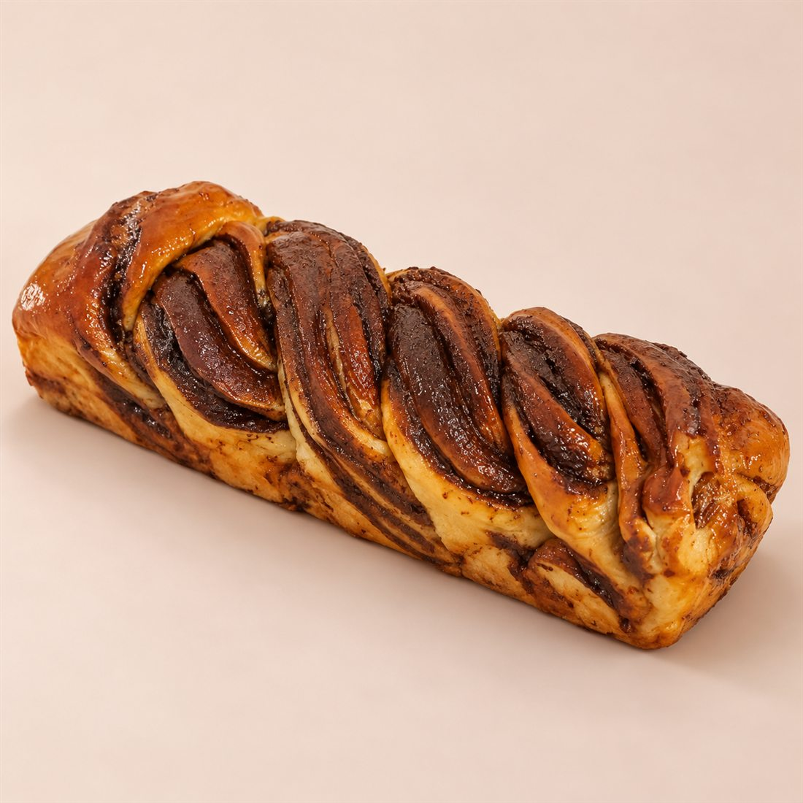
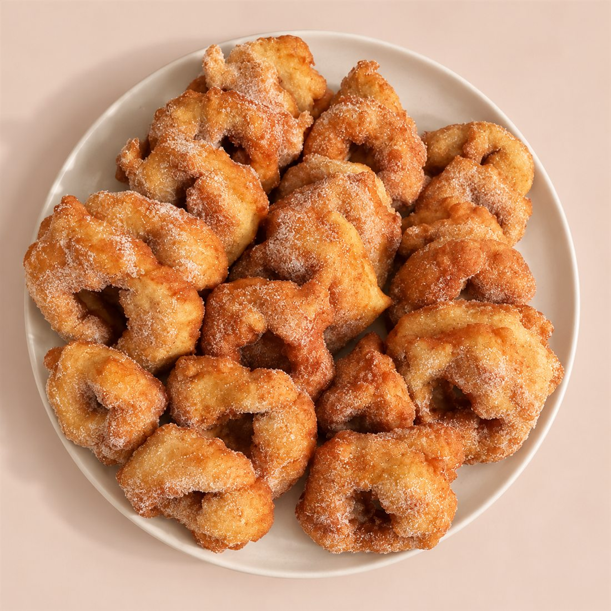

קונספט חדש לתמונות: רקע צבעוני נקי
בלי מפה ובלי אביזרים. המאפה יושב על נייר חלק בגוון שמנת־ורדרד, באור יום רך ועם צל אחד, בסגנון של מגזין. המאפים נשארו כמו בצילומים של לירון, ורק הרקע והאור השתנו. בימין: הצילום המקורי.
1. צילום מוצר לתפריט
התבנית לכל 24 המוצרים: אותו נייר, אותו אור ואותה זווית.


2. מגש אירוח, מלמעלה
התבנית למגשי האירועים (ספינג', חם חם ופחזניות): צלחת קרמיקה פשוטה על אותו נייר.


להשוואה: הקונספט הקודם, על מפה
זה מה שירד.